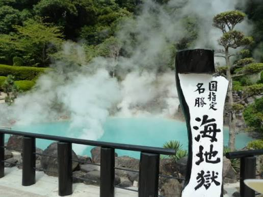
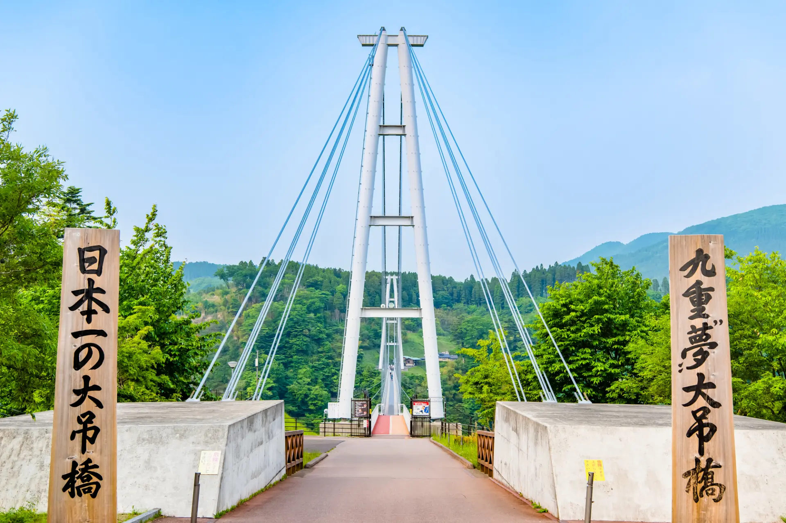
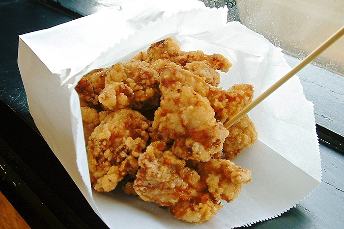
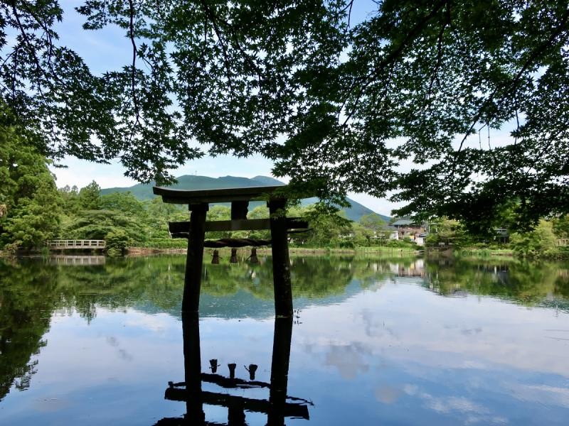
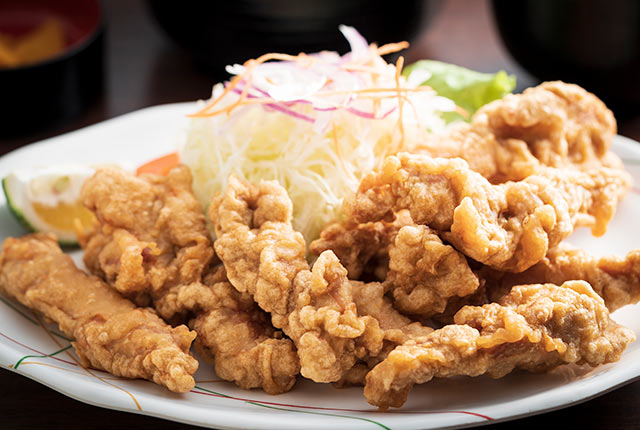
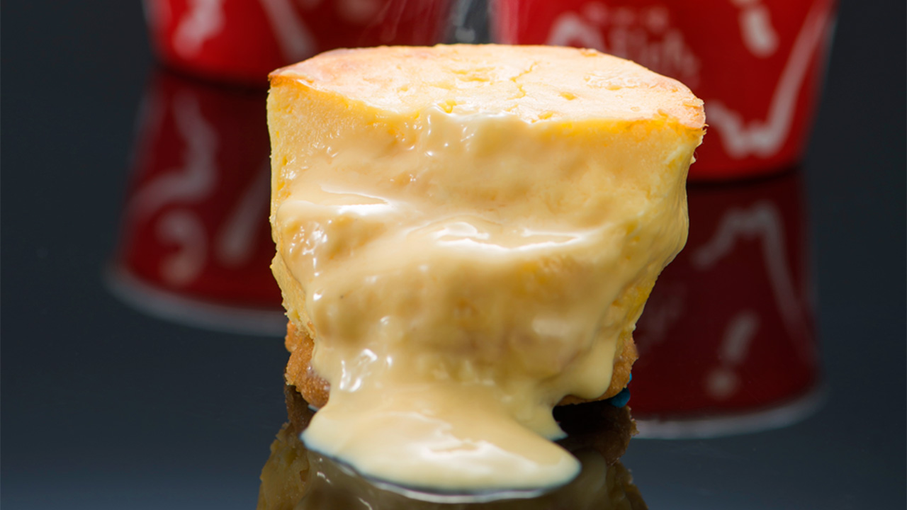
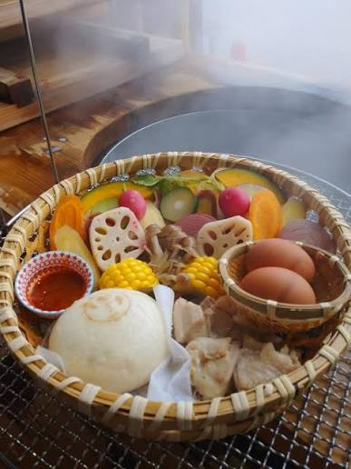
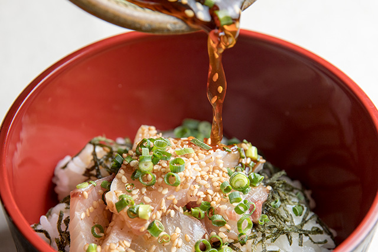

温泉と高原ドライブを主役に。
大分空港でレンタカーを受け取り、別府・由布院へ。2日目はやまなみハイウェイと九重方面へ足を延ばし、3日目は温泉街や市場を巡って空港へ戻ります。
温泉地を巡りながら、由布岳、九重の高原、別府の湯けむりへ。りゅうきゅう丼、だんご汁、地獄蒸しも味わう2泊3日です。
大分空港でレンタカーを受け取り、別府・由布院へ。2日目はやまなみハイウェイと九重方面へ足を延ばし、3日目は温泉街や市場を巡って空港へ戻ります。
湯けむり、由布岳、湖、高原の大吊橋をめぐり、大分らしい景色を楽しみます。

鮮やかなコバルトブルーの湯と立ち上る湯けむりが印象的。地獄めぐりの中でも特に写真映えする場所です。

山あいに架かる大吊橋から、渓谷と新緑の景色を楽しみます。橋を渡らない場合でも入口周辺から眺められます。

由布岳を背景にした温泉街で、飲食店や土産店を巡ります。途中で休憩を入れやすい散策エリアです。

湖面に山や鳥居が映る静かな景色。湯布院散策と組み合わせて、朝や夕方の穏やかな時間に訪れます。
りゅうきゅう丼、由布院 Milch（ケーゼクーヘン）、地獄蒸し、とり天を旅の流れに組み込みます。

ふんわりした衣で鶏肉を揚げ、酢醤油やからしで味わう大分の定番料理です。

にんにくや醤油の下味が効いた専門店のからあげ。移動途中の食べ歩きにも向きます。

温泉の蒸気で野菜、肉、魚介、卵などを蒸し上げる、別府ならではの食体験です。

新鮮な魚を甘辛い醤油だれと薬味で和えてご飯にのせる、大分の郷土料理です。
4月中旬〜下旬は、由布院や九重で新緑が始まり、高原ドライブに向く時期です。山側は朝晩に冷え込む場合があるため、上着を用意します。
レンタカーを活かし、景色と食をしっかり盛り込んだ流れです。
大分空港でレンタカーを受け取り、別府へ。地獄めぐり、湯けむり展望、地獄蒸しを楽しみます。
金鱗湖と湯布院の町並みを巡った後、やまなみハイウェイを走って九重“夢”大吊橋へ。景色を楽しみながら無理のない時間配分で移動します。
朝の温泉を楽しみ、とり天やりゅうきゅう丼を味わいます。時間に余裕があれば別府で由布院 Milch（ケーゼクーヘン）や土産を選び、大分空港へ戻ります。
大分空港の公式観光案内では、九重・玖珠方面は車で約60〜65分の目安です。